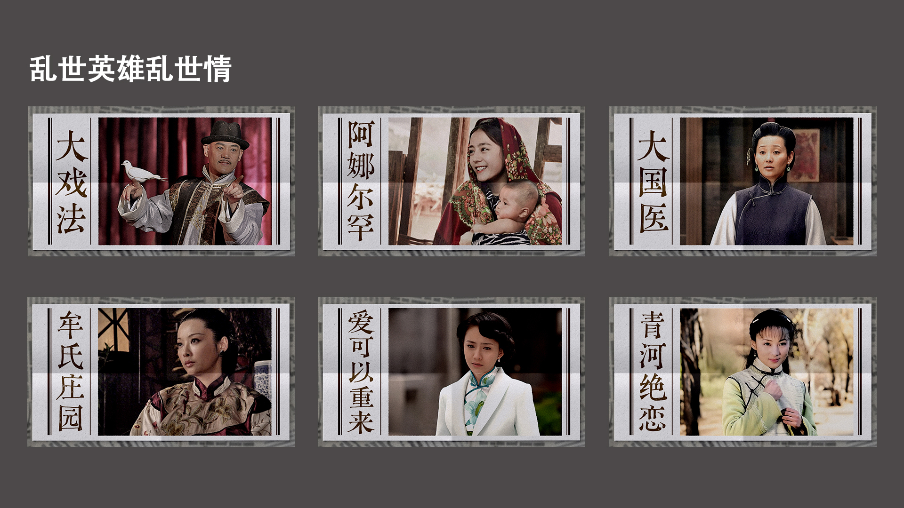
↓
Scroll to explore
Sohu Special Topic Design
乱世英雄 乱世情
2024
专题聚焦战争年代背景下人物的爱情故事，因此整体采用民国旧报纸作为设计灵感。通过灰白纸张、印刷纹理和折痕效果模拟旧报纸质感，并保留人物照片作为视觉焦点，使专题兼具历史记录感与时代氛围，呼应影片中的家国叙事与人物命运。
设计关键词
民国报纸｜纸张折痕｜旧照片｜时代记忆
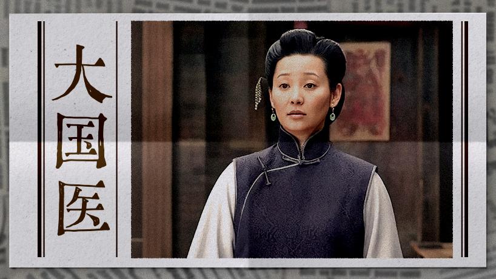
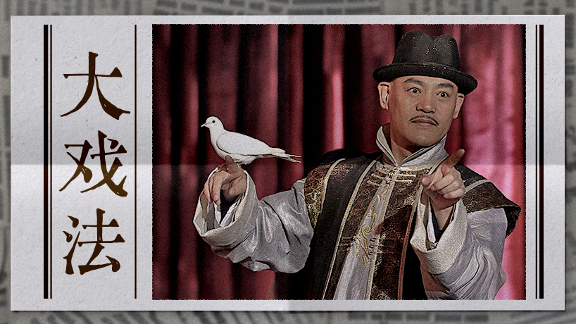
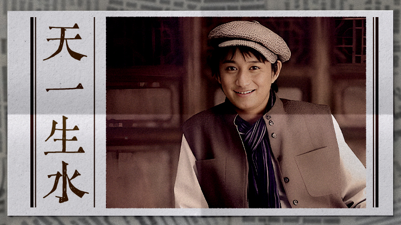
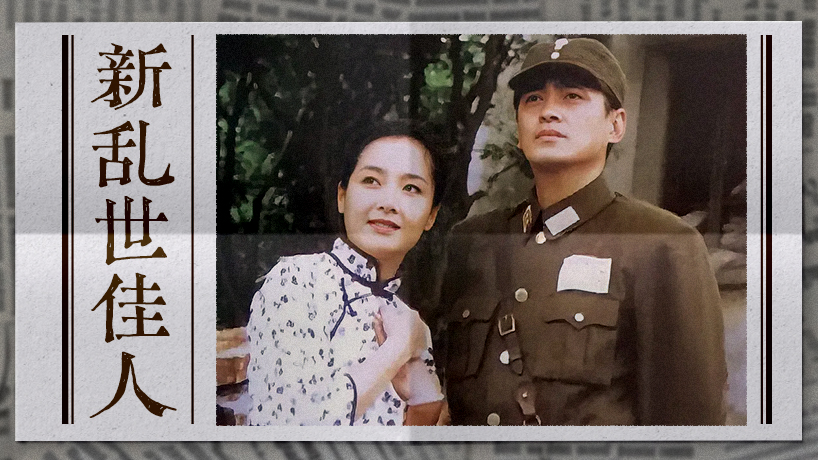
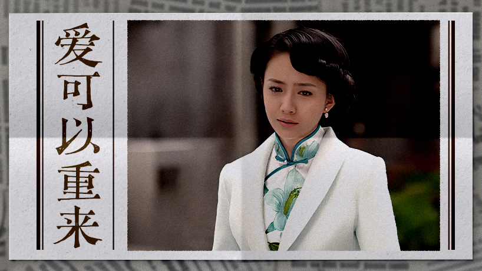
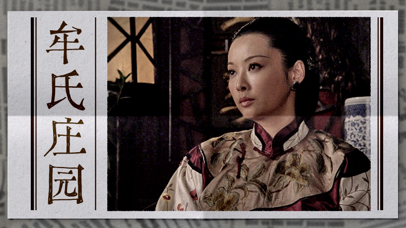
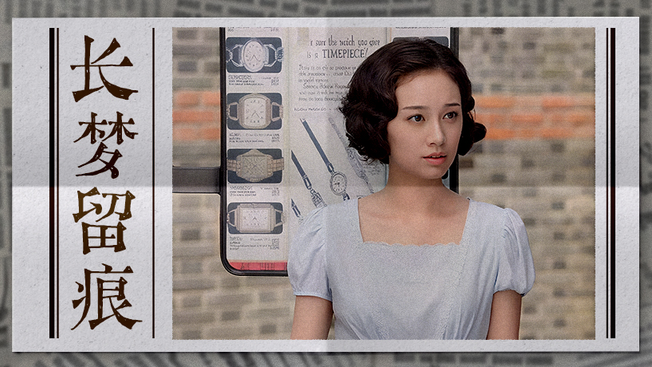
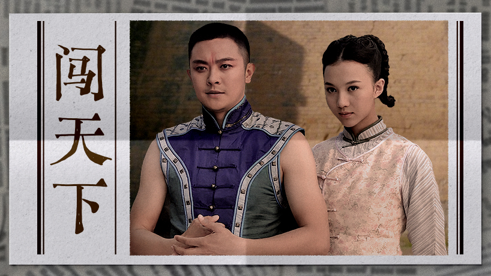
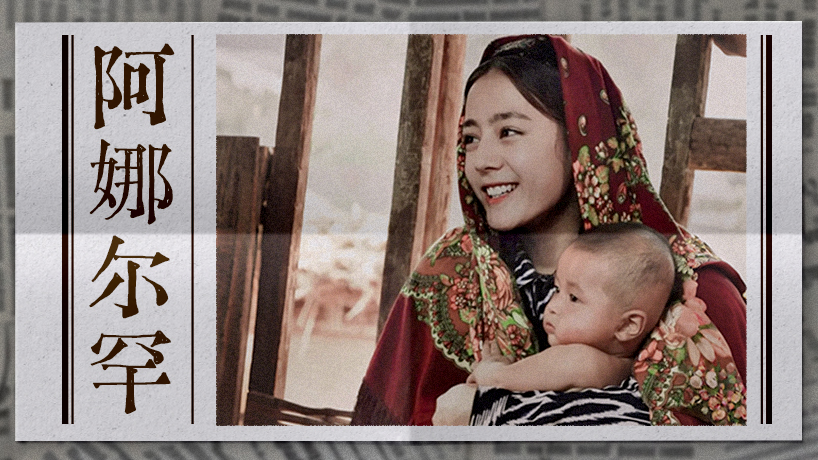
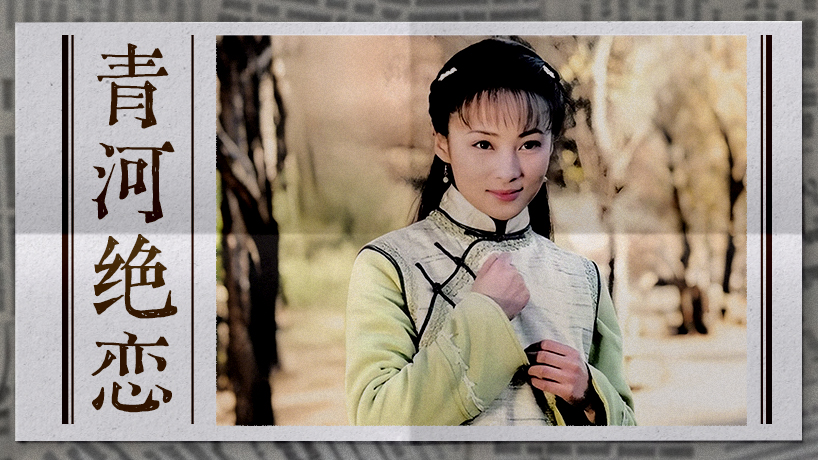